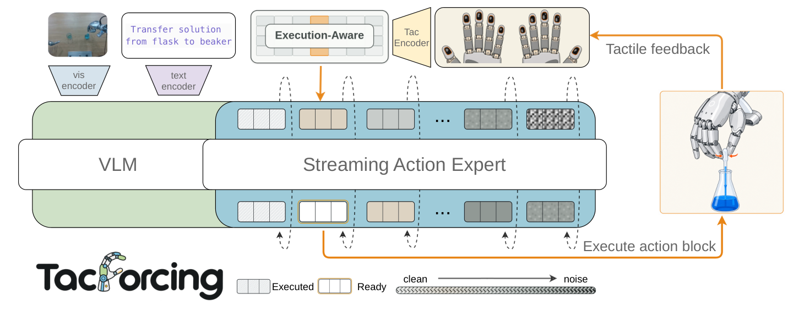
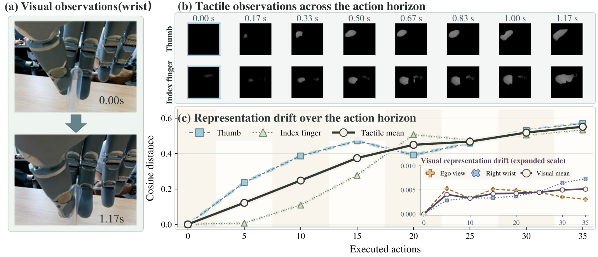

제출: 2026-08-26 · UniVTAC 6-task 시뮬 + 실 Stand Bottle / Transfer Liquid / Wipe Board
한 줄 요약 (TL;DR)
일반 VLA는 실행 시작 전 관찰로 완성된 chunk를 만들어 실행 도중 새 촉각을 반영 못 한다. TacForcing은 chunk를 K개 블록으로 쪼개 블록별 flow time으로 순차 완성하고, 실행 도중 얻은 촉각을 다음 블록에만 조건부화(EATA)한다. 그 결과 촉각(cosine 변화 ~0.55)이 시각(~0.005)보다 훨씬 빠르게 바뀌는 접촉-풍부 태스크에서 시뮬 6-task 65%(π₀.₅ 51 대비 +14, RDP 42 대비 +23), 실 3-task 69%(π₀.₅ 27 · GR00T 42 · FTP-1 48 모두 큰 폭 상회). EATA 제거 시 시뮬 51 · 실 48로 급락 — 마스크가 핵심.
1배경 · 문제의식
접촉-풍부(contact-rich) 조작 — 병 세우기, 액체 옮기기 — 에서는 손끝 촉각이 액션 결정에 필수. 문제는 기존 VLA가 "관찰 → 여러 스텝 chunk를 한 번에 생성 → 실행" 구조라, 실행 도중 촉각이 급변해도 이미 만들어진 chunk엔 반영 안 됨. 저자들 관찰: 40-action 지평 안에서 촉각 임베딩의 cosine 변화가 ~0.55, 시각은 ~0.005 — 100배 이상 차이. 즉 시각은 거의 정지, 촉각은 폭발적으로 변한다.
직관: 잔에 물을 따를 때 눈은 잔 위치를 계속 보고 있지만(거의 안 바뀜), 손가락에 걸리는 무게·기울기(촉각)는 매 순간 다르다. 이 다른 정보를 chunk 시작 직전 한 번만 참조하면 늦다 — chunk 중간에도 촉각이 새로 반영돼야 한다.
2핵심 Contribution
Streaming Action Expert — 표준 action expert를 대체. action chunk를 K개 블록으로 쪼개고 각 블록에 position-dependent flow time을 부여 → 앞 블록이 먼저 완성·실행되는 동안 뒤 블록은 아직 refine 중.
EATA (Execution-Aware Tactile Attention) — 촉각 참조를 곧 실행될 다음 블록에만 허용하는 attention mask. 나머지 미완 블록은 stale하지 않은 촉각만 받도록 제한 → 시간 mismatch 최소화.
학습-추론 정렬 — 학습 시에도 sampled 시점의 촉각과 대응 블록만 매칭해 loss 계산, 배포 시와 동일한 정보 흐름을 훈련.
실증 — π₀.₅(vision-only) 대비 시뮬 +14, 실 +42; RDP(tactile-reactive) 대비 시뮬 +23. Fixed tactile은 오히려 무의미. streaming without EATA는 절반 이득만.
3Method
기존 방식 vs TacForcing
기존: 시각 관찰 O + 촉각 관찰 T0 → 완전한 action chunk (a₁...aₙ) 생성 → 순차 실행. 실행 도중 새 촉각 T1, T2...가 들어와도 이미 완성된 chunk는 못 바꿈.
TacForcing: 하나의 chunk를 K개 블록 (블록 1이 먼저 실행됨)으로 나눔. 각 블록 k는 다른 노이즈 스케줄로 완성 시점이 어긋남 → 블록 1 완성·실행 → 블록 2 완성 시점에 그때의 촉각 T1 반영 → 블록 2 실행 → ...
Position-dependent flow time
표준 flow matching은 chunk 전체에 하나의 flow time을 쓰지만, TacForcing은 각 블록 k에 자체 flow time을 부여:
λk(n) = min(n / nk, 1), nk = k · S 기호: n은 sampling step 카운트, S는 블록 하나가 완성되는 데 필요한 step 수, nk는 블록 k가 완전히 클린해지는 step 지점. 즉 블록 1은 S 스텝에 완성, 블록 2는 2S, ..., 블록 K는 KS 스텝에 완성.
이 스케줄 덕에 블록 1이 완성돼 실행되는 시각에 블록 2는 반쯤 클린, 블록 3은 4분의 1 클린 상태 → 앞 블록이 실행되는 동안 뒤 블록들은 추가로 정제될 여지가 남는다.
EATA (Execution-Aware Tactile Attention)
배경: k−1개 블록이 실행되고 나면 최신 촉각 표현 Zt(k−1)가 관찰된다. 이 촉각은 다음 실행 블록 At(k)와 시간적으로 정렬돼 있다(즉시 실행됨). 나머지 미완 블록(k+1, k+2, ...)은 그 후에나 실행되므로, 지금의 촉각을 참조하면 stale이 된다.
EATA mask 규칙: 촉각 Zt(k−1)는 액션 위치 i가 블록 k에 속할 때만 attend 가능(mask=0), 그 외엔 −∞. 그러면 뒤 블록들은 자신이 실행될 시점에 얻어질 미래의 새 촉각을 기다리며 진화한다.
학습 절차 (streaming과 정렬)
정규화된 진행도 p ~ U([0,1))을 샘플링(전체 KS 스텝 중 어느 시점인지).
블록별 flow time λk(n)과 그에 대응하는 중간 상태 액션을 계산.
EATA mask를 적용해 loss 계산 — 아직 완성 안 된 액션 위치만 학습(이미 실행된 부분은 학습 안 함).
이 학습 방식이 추론 시 정보 흐름과 완전히 일치해 학습-추론 mismatch를 제거.
4실험 결과
시뮬 UniVTAC 6-task
Task
π₀.₅
UniVTAC-ACT
RDP
FTP-1
TacForcing
Lift Bottle
88
59
84
89
90
Pull-out Key
43
41
18
35
48
Lift Can
46
24
12
66
63
Put Bottle in Shelf
43
6
41
23
43
Insert Hole
39
36
23
62
69
Insert Tube
48
58
75
76
79
평균
51
37
42
59
65
π₀.₅(vision-only) 대비 +14%p, RDP(tactile-reactive) 대비 +23%p. FTP-1(streaming action forcing) 대비 +6%p — 촉각을 EATA로 시점에 맞게 주입한 이득이 명확.
실 로봇 3-task
Task
π₀.₅
GR00T
FTP-1
TacForcing
Stand Bottle
56
69
50
81
Transfer Liquid
19
13
19
50
Wipe Board
—
—
75
75
평균
27
42
48
69
Transfer Liquid에서 격차 최대 — 액체 무게 변화라는 시각으로 못 보는 접촉 정보가 결정적. Stand Bottle 81 vs FTP-1 50, GR00T 69, π₀.₅ 56 모두 큰 폭 상회.
Visual vs Tactile 변화율 (그림 2)
Dropper 짜기 40-action 지평 안에서 촉각 임베딩 cosine 변화 ≈ 0.55 vs 시각 ≈ 0.005. 100배 차이 — 촉각을 chunk 내 여러 시점에 반영해야 하는 이유의 직접 증거.
5Ablation (핵심 요약)
구성
Sim 평균
Real 평균
Base (촉각 없음)
43%
42%
Fixed Tactile (초기 한 번만)
42%
31%
Streaming w/o EATA
51%
48%
Full TacForcing
60%
69%
Fixed tactile은 오히려 해로울 수 있다(31% vs base 42%) — stale 촉각이 잘못된 신호로 작용. "촉각만 있으면 좋다"가 아님을 실증.
Streaming without EATA는 이득이 있지만 부족(+9 sim, +6 real). 미완성 블록들이 동일한 촉각을 다 참조하면 뒤 블록엔 stale.
EATA 추가로 +9 sim, +21 real — 실 로봇에서 이득이 특히 큼(촉각 변화가 실환경에서 더 빠름).
6핵심 Figure / Table

Figure 1 — Framework. VLM이 태스크 컨텍스트를 인코딩, streaming action expert가 K개 블록을 position-dependent flow time으로 순차 완성, 블록별로 실행 시점에 갱신되는 촉각이 EATA 마스크로 다음 블록에만 반영. (출처: arXiv:2608.25798)

Figure 2 — 시각 vs 촉각 dynamics. Dropper 짜기 40-action 지평에서 촉각 임베딩 cosine 변화 0.55 vs 시각 0.005 — 110× 차이. 이 그림 하나가 "촉각은 execution-time에 계속 갱신되어야 한다"는 논문의 핵심 논리를 시각화. (출처: arXiv:2608.25798)
Ablation 표가 논문의 skeleton evidence — Fixed tactile 31 < Base 42가 "촉각을 stale하게 쓰면 오히려 해롭다"를 증명하고, Full 69 vs w/o EATA 48이 "실행 시점 정렬 마스크가 없으면 촉각 이득의 절반이 소실"됨을 증명.